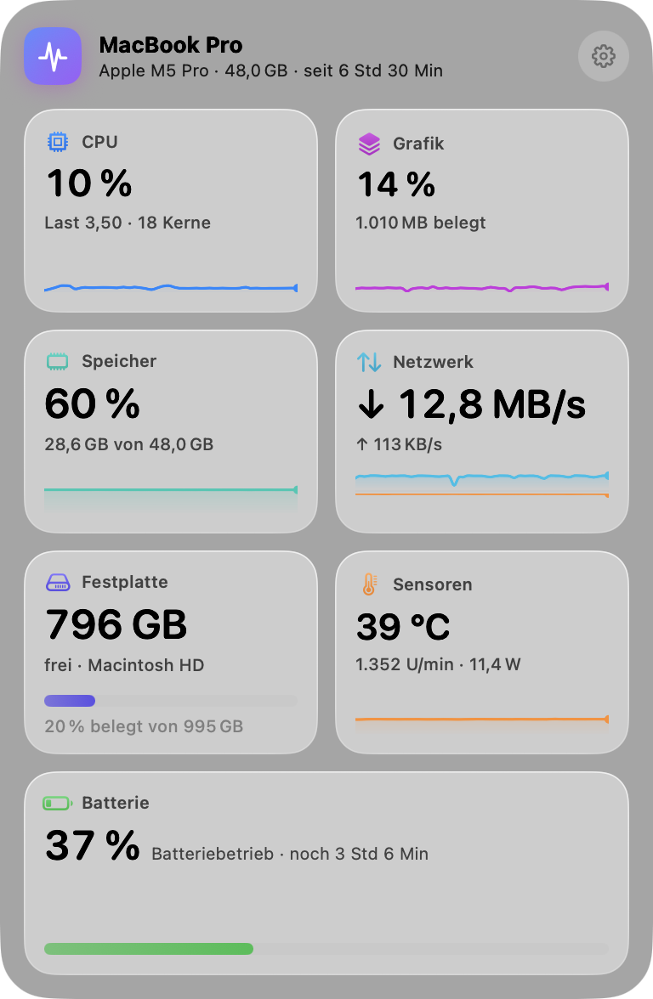

Dein Mac auf einen Blick.
Puls zeigt CPU, Grafik, Speicher, Netzwerk, Festplatte und Akku live in der Menüleiste – in einem ruhigen Glas-Panel, gemacht für macOS Tahoe.
Auch im Mac App Store (in Prüfung) · macOS 26 oder neuer · Apple Silicon & Intel

CPU & Grafik
Gesamtauslastung, jeder Kern einzeln, Systemlast und GPU-Auslastung – mit Verlauf.
Speicher
App-Speicher, fester und komprimierter Speicher, Cache, Speicherdruck und Auslagerung.
Netzwerk
Download und Upload live, Spitzenwerte, Verbindungsart, IP-Adressen und Datenmenge.
Festplatte
Lese- und Schreibrate in Echtzeit und freier Speicherplatz aller Volumes.
Thermik & Energie
Thermischer Zustand, Leistungsaufnahme und Temperaturen im Blick.
Batterie
Ladestand, Restlaufzeit, Zustand, Ladezyklen und die Akkus deiner Magic-Geräte.
Deine Menüleiste
Wähle selbst, welche Werte oben stehen. Farbige Ampel-Indikatoren zeigen sofort, wenn etwas unter Last steht.
Einfach statt überladen
Ein Symbol, ein Panel, alles Wichtige. Hell- und Dunkelmodus automatisch.
Sparsam & privat
Kaum Rechenlast, keine Datensammlung, kein Konto, keine Werbung, kein Abo.